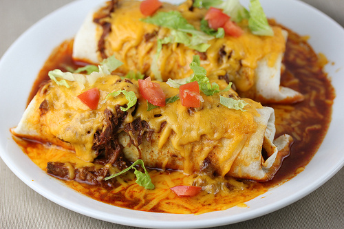

Burritos

South of the Border Smothered Burritos
This is a fairly easy and fast recipe to make delicious smothered burritos. These can be served by themselves or with a side of lettuce, tomatoes and onions.
Ingredients
- 1 lb Ground Beef
- 2 cans (7 oz each) Green Chili Salsa
- 1 can (15 oz) Cream of Chicken Soup
- 1 can (15 oz) Refried Beans
- 12 (10-12") Flour Tortillas
- 1/2 lb Jack Cheese
- 1/2 lb Cheddar Cheese
- 1 cup Chopped Onion
Instructions
- In a large skillet, brown ground beef
- While the beef is cooking, combine the green chile salsa and chicken soup in a saucepan and warm over medium heat
- Meanwhile, heat the beans in a separate pan and soften the tortillas
- Once the beef is ready and the other ingredients are warm, fill the tortillas with the following: 1 tablespoon each of meat, salsa mixture and beans
- Add onions and cheese
- Roll tortillas and place in a casserole dish
- Top with remaining salsa, onions and cheese
- Bake in 350 degree oven for 20 minutes until bubbly
Home Page